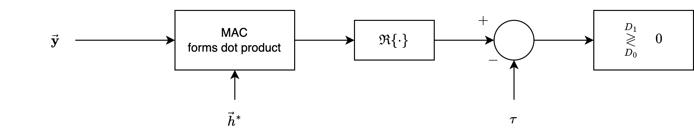
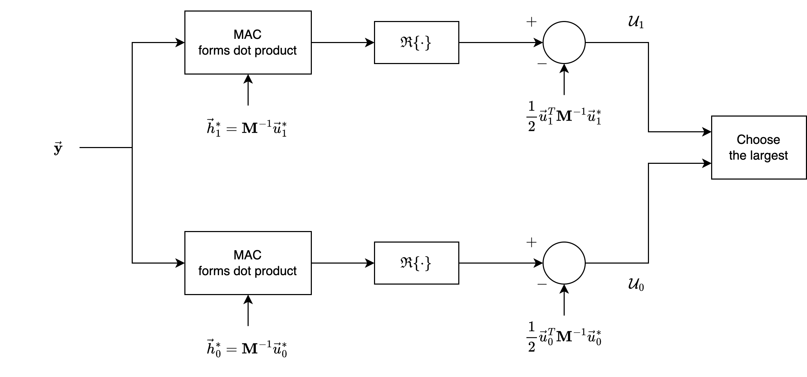
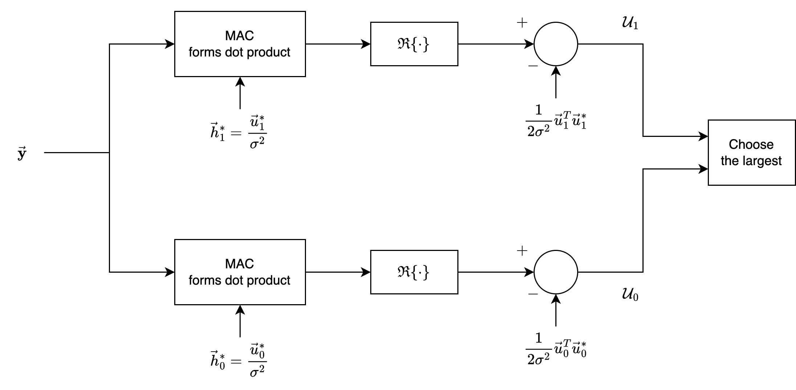

The Optimum Digital Detector in Additive Gaussian Noise#
In this section, we extend the previous analysis of signal detection in the presence of real-valued additive Gaussian noise to a more general and practical scenario where both the signals and the noise are complex-valued.
This generalization is significant because many real-world communication systems, such as wireless communications and radar, utilize complex signals to convey information efficiently.
Complex signals allow for modulation techniques like Quadrature Amplitude Modulation (QAM) and Phase Shift Keying (PSK), which exploit both amplitude and phase information.
Binary Hypothesis Testing#
As before, we consider a fundamental binary hypothesis testing problem where we aim to decide between two possible scenarios based on observed data:
\( H_0 \): The null hypothesis, representing one possible state of the system (e.g., no signal present or a specific known signal).
\( H_1 \): The alternative hypothesis, representing another state (e.g., signal present or a different known signal).
Our objective is to determine, using statistical methods, which hypothesis is more likely to be true given the measurements we collect.
Signal Modelling#
Under each hypothesis \( H_i \) (where \( i = 0 \) or \( 1 \)), there is an associated set of \( k \) complex signal values
These signals represent the expected or known signal components under each hypothesis.
Under \( H_0 \): The signal is \( \{ u_{0,1}, u_{0,2}, \ldots, u_{0,k} \} \).
Under \( H_1 \): The signal is \( \{ u_{1,1}, u_{1,2}, \ldots, u_{1,k} \} \).
For example, these complex values could represent samples of a modulated signal, where each sample carries both amplitude and phase information.
We collect \( k \) measurements \( y_j \), where each measurement is a complex number.
These measurements represent the observed data and are affected by additive complex Gaussian noise.
This means that the noise added to each measurement is a complex-valued random variable with Gaussian statistical properties.
In practical terms, each measurement \( y_j \) can be thought of as the received signal at a specific time or frequency, which includes both the desired signal component and the noise introduced by the communication channel or receiver electronics.
Since the measurements are complex, we model each one as the sum of the signal component \( u_{i,j} \) and the noise component \( z_j \):
where
\( y_j \): The \( j \)-th complex measurement.
\( u_{i,j} \): The \( j \)-th complex signal value under hypothesis \( H_i \).
\( z_j \): The \( j \)-th complex Gaussian noise random variable.
Thus, each observed data point is a combination of the true signal (which depends on the hypothesis) and random noise.
The noise component \( z_j \) is assumed to be a zero-mean complex Gaussian random variable. This means:
The real part and the imaginary part of \( z_j \) are each zero-mean Gaussian random variables.
The noise is fully characterized by its covariance matrix, which captures the variance and correlation between different noise components.
The zero-mean assumption implies that the noise does not introduce any bias in the measurements; on average, it does not shift the signal.
This is a common assumption in communication theory because Gaussian noise models (like additive white Gaussian noise, AWGN) are mathematically tractable and often provide a good approximation of real-world noise.
We can represent all measurements collectively using vector notation:
\( \vec{y} \): The measurement vector, comprising \( y_1, y_2, \ldots, y_k \).
\( \vec{u}_i \): The signal vector under hypothesis \( H_i \), containing \( u_{i,1}, u_{i,2}, \ldots, u_{i,k} \).
\( \vec{z} \): The noise vector, consisting of \( z_1, z_2, \ldots, z_k \).
Therefore, under hypothesis \( H_i \), the measurement vector is the sum of the signal vector and the noise vector:
This compact representation simplifies mathematical manipulations and is especially useful when dealing with multiple measurements and complex signals.
Joint Probability Density Function#
Because the noise vector \( \vec{z} \) consists of \( k \) zero-mean complex Gaussian random variables, its statistical properties are fully described by its joint probability density function (PDF).
The joint PDF for \( \vec{z} \) is given by:
where
\( (2\pi)^k \det(\mathbf{M}) \): This term normalizes the PDF, ensuring that the total probability integrates to 1.
\( \det(\mathbf{M}) \): The determinant of the covariance matrix \( \mathbf{M} \), representing the volume scaling in the multivariate distribution.
\( \vec{z}^T \): The transpose of the noise vector \( \vec{z} \).
\( \vec{z}^* \): The complex conjugate of \( \vec{z} \).
\( \mathbf{M}^{-1} \): The inverse of the covariance matrix \( \mathbf{M} \).
Exponential Term: Represents the quadratic form that defines the shape of the multivariate Gaussian distribution in the complex domain.
Covariance Matrix#
The covariance matrix \( \mathbf{M} \) characterizes the second-order statistical properties of the complex noise vector \( \vec{z} \). It is defined by:
where
\( E \{ \vec{z} \vec{z}^T \} \): The expected value (mean) of the outer product of \( \vec{z} \) with its transpose \( \vec{z}^T \). This captures the correlations between the different components of \( \vec{z} \).
Factor of \( \frac{1}{2} \): In complex random variables, the covariance is often defined with this factor to maintain consistency with real-valued covariance definitions.
Complex Covariance Matrix: Since \( \vec{z} \) is complex, \( \mathbf{M} \) is also a complex matrix, which may contain both real and imaginary components.
I/Q#
Since \( \vec{z} \) is a complex vector, it can be decomposed into its real (in-phase) and imaginary (quadrature) components:
\( \vec{z}_I \): The real part (in-phase component) of \( \vec{z} \).
\( \vec{z}_Q \): The imaginary part (quadrature component) of \( \vec{z} \).
\( j \): The imaginary unit, where \( j^2 = -1 \).
Thus, when we write \( p(\vec{z}) \), it is a shorthand notation for the joint PDF \( p(\vec{z}_I, \vec{z}_Q) \), which describes the probability distribution over both the real and imaginary parts of the noise vector.
This decomposition allows us to work with real-valued quantities, facilitating certain mathematical manipulations and interpretations.
The probability density functions (PDFs) of the measurement vector \( \vec{y} \) under hypotheses \( H_1 \) and \( H_0 \) are given by:
Under \( H_1 \):
Under \( H_0 \):
where
\( [\vec{y} - \vec{u}_i] \): The difference between the observed measurements and the expected signal under hypothesis \( H_i \).
\( [\vec{y}^* - \vec{u}_i^*] \): The complex conjugate of the difference.
Quadratic Form: The exponent involves a quadratic form that measures the “distance” between the observed data and the expected signal, weighted by the inverse covariance matrix \( \mathbf{M}^{-1} \).
Normalization: The denominator ensures that the PDF integrates to 1 over the entire complex space.
Likelihood Ratio#
We derive the likelihood ratio \( L(\vec{y}) \) and the log-likelihood ratio \( \ell(\vec{y}) \) for the complex-valued signal detection problem
The likelihood ratio \( L(\vec{y}) \) is:
Substituting the expressions for \( p_1(\vec{y}) \) and \( p_0(\vec{y}) \):
Note that the denominators \( (2\pi)^k \det(\mathbf{M}) \) cancel out.
Simplifying the Likelihood Ratio
The ratio of exponentials simplifies to:
We denote the exponent by \( \mathsf{EXP} \):
Next, we will expand both quadratic forms in \( \mathsf{EXP} \).
Expand \( [\vec{y} - \vec{u}_1]^T \mathbf{M}^{-1} [\vec{y}^* - \vec{u}_1^*] \):
Similarly for \( [\vec{y} - \vec{u}_0]^T \mathbf{M}^{-1} [\vec{y}^* - \vec{u}_0^*] \):
Now, substitute the expanded forms back into \( \mathsf{EXP} \):
Simplify \( \mathsf{EXP} \):
Simplify terms:
The terms \( -\frac{1}{2} \vec{y}^T \mathbf{M}^{-1} \vec{y}^* \) and \( +\frac{1}{2} \vec{y}^T \mathbf{M}^{-1} \vec{y}^* \) cancel out.
Combining like terms:
Rewriting:
Expressing \( \mathsf{EXP} \) in Terms of Differences
Combine Terms Involving \( \vec{y} \)
We factor out \( \vec{y}^T \mathbf{M}^{-1} \) and \( \vec{u}_i \):
Utilizing the Symmetry in \( \mathbf{M}^{-1} \)
Given that \( \mathbf{M} \) is complex conjugate symmetric, i.e., \( \mathbf{M} = \mathbf{M}^{*T} \), it follows that \( \mathbf{M}^{-1} \) is also complex conjugate symmetric:
Additionally, we have:
These properties allow us to manipulate terms involving \( \vec{u}_i \) and \( \vec{y} \).
Lemma. Show that
Proof:
Take the left-hand side (LHS):
Take the complex conjugate of the right-hand side (RHS):
Given that \( \mathbf{M}^{-1} = (\mathbf{M}^{-1})^{*T} \), so \( (\mathbf{M}^{-1})^* = (\mathbf{M}^{-1})^T \).
Therefore:
Since \( \left( \vec{u}_i^T \mathbf{M}^{-1} \vec{y}^* \right)^T = \vec{y}^T \mathbf{M}^{-1} \vec{u}_i^* \), the equality holds.
Thus:
Apply the Equality to Simplify \( \mathsf{EXP} \)
Using the equality, we can combine the terms:
Simplify:
Expressing \( \mathsf{EXP} \) in Terms of Real Parts
Since \( \mathsf{EXP} \) involves \( \vec{y}^T \mathbf{M}^{-1} (\vec{u}_1^* - \vec{u}_0^*) \), which is a complex scalar, we can consider its real part.
Although \( \vec{y}^T \mathbf{M}^{-1} (\vec{u}_1^* - \vec{u}_0^*) \) may be complex, \( \mathsf{EXP} \) must be real because it’s in the exponent of a real-valued exponential function.
We can write:
But earlier, we had:
Given that \( \mathsf{EXP} \) is real, the imaginary part of \( \vec{y}^T \mathbf{M}^{-1} (\vec{u}_1^* - \vec{u}_0^*) \) must be canceled out by the complex conjugate terms.
Therefore, we can write:
Final Expression for the Likelihood Ratio
Substitute \( \mathsf{EXP} \) back into \( L(\vec{y}) \):
Simplify:
But since \( \exp(a + b) = \exp(a) \exp(b) \), and \( 2 \operatorname{Re}\{ w \} = w + w^* \), we can keep the expression as:
Recognizing that \( \vec{y}^T \mathbf{M}^{-1} (\vec{u}_1^* - \vec{u}_0^*) + \left[ \vec{y}^T \mathbf{M}^{-1} (\vec{u}_1^* - \vec{u}_0^*) \right]^* = 2 \operatorname{Re} \left\{ \vec{y}^T \mathbf{M}^{-1} (\vec{u}_1^* - \vec{u}_0^*) \right\} \).
Alternatively, write \( L(\vec{y}) \) as:
Log-Likelihood Ratio#
The log-likelihood ratio \( \ell(\vec{y}) \) is:
From the expression of \( L(\vec{y}) \):
Simplify Using Real Part
Since \( \vec{y}^T \mathbf{M}^{-1} (\vec{u}_1^* - \vec{u}_0^*) + (\vec{u}_1 - \vec{u}_0)^T \mathbf{M}^{-1} \vec{y}^* \) is twice the real part of \( \vec{y}^T \mathbf{M}^{-1} (\vec{u}_1^* - \vec{u}_0^*) \), we can write:
Constants in the Log-Likelihood Ratio
The last two terms in \( \ell(\vec{y}) \):
are constants with respect to \( \vec{y} \). They depend only on the known signal vectors \( \vec{u}_0 \), \( \vec{u}_1 \), and the noise covariance matrix \( \mathbf{M} \).
Therefore, they can be computed in advance. This is important in detection design.
Note: This derivation assumes that all vectors and matrices are of compatible dimensions and that the noise covariance matrix \( \mathbf{M} \) is invertible.
Test Statistic#
Weighted Sum: \( \vec{y}^T \mathbf{M}^{-1} (\vec{u}_1^* - \vec{u}_0^*) \)
We have that
\( \mathbf{M}^{-1} \):
It’s the inverse of the noise covariance matrix \( \mathbf{M} \).
As \( \mathbf{M} \) is a \( k \times k \) matrix, so is \( \mathbf{M}^{-1} \).
\( (\vec{u}_1^* - \vec{u}_0^*) \):
This represents the difference between the complex conjugates of the signal vectors under hypotheses \( H_1 \) and \( H_0 \).
It is a column vector of size \( k \times 1 \).
Computation of \( \vec{y}^T \mathbf{M}^{-1} (\vec{u}_1^* - \vec{u}_0^*) \):
Multiply \( \mathbf{M}^{-1} \) (size \( k \times k \)) with \( (\vec{u}_1^* - \vec{u}_0^*) \) (size \( k \times 1 \)):
Multiply the transpose of \( \vec{y} \) (size \( 1 \times k \)) with the resulting vector:
Interpretation as a Weighted Sum:
The scalar \( \vec{y}^T \mathbf{M}^{-1} (\vec{u}_1^* - \vec{u}_0^*) \) is essentially a linear combination of the components of the measurement vector \( \vec{y} \).
The weights in this linear combination are determined by the elements of \( \mathbf{M}^{-1} (\vec{u}_1^* - \vec{u}_0^*) \), which encapsulate:
The difference between the signal vectors under the two hypotheses.
The inverse of the noise covariance matrix, accounting for the noise characteristics.
This operation projects the measurement vector \( \vec{y} \) onto a specific direction in the signal space, emphasizing components that are most informative for distinguishing between \( H_0 \) and \( H_1 \).
Decision Threshold#
The general decision rule using likelihood statistic:
If \( L(\vec{y}) > \eta \), decide \( H_1 \).
If \( L(\vec{y}) \leq \eta \), decide \( H_0 \).
or using log-likelihood statistic:
If \( \ell(\vec{y}) > \eta_L \), decide \( H_1 \).
If \( \ell(\vec{y}) \leq \eta_L \), decide \( H_0 \).
Constants in the Log-Likelihood Ratio:
The expression for \( \ell(\vec{y}) \) includes terms that are constants, independent of the measurements \( \vec{y} \):
These constants depend only on:
The known signal vectors \( \vec{u}_0 \) and \( \vec{u}_1 \).
The noise covariance matrix \( \mathbf{M} \).
Since these constants do not vary with \( \vec{y} \), they can be incorporated into the threshold \( \eta \).
This simplifies the decision rule to focus on the part of \( \ell(\vec{y}) \) that depends on the observed data.
Decision Making: Comparing \( \ell(\vec{y}) \) to a Threshold#
The decision rule compares the log-likelihood ratio \( \ell(\vec{y}) \) to a threshold \( \eta \):
Note that: \( \ell(\vec{y}) \) is rewritten as:
where:
\( \operatorname{Re} \left\{ \cdot \right\} \) denotes the real part of a complex number.
\( C = \frac{1}{2} \vec{u}_0^T \mathbf{M}^{-1} \vec{u}_0^* - \frac{1}{2} \vec{u}_1^T \mathbf{M}^{-1} \vec{u}_1^* \) is the constant term.
where the components include:
Data-Dependent Term:
\( \operatorname{Re} \left\{ \vec{y}^T \mathbf{M}^{-1} (\vec{u}_1^* - \vec{u}_0^*) \right\} \) depends on the observed measurements \( \vec{y} \).
This term captures the alignment between the observed data and the difference between the signals under \( H_1 \) and \( H_0 \), adjusted by the noise characteristics.
Constant Term:
\( C \) depends only on known quantities and does not vary with \( \vec{y} \).
Simplified Decision Rule
We can redefine the threshold to include the constant term:
The decision rule now focuses solely on the data-dependent term:
Advantages of Simplification:
Computational Efficiency: Reduces the number of operations required during real-time processing, as constants are precomputed.
Clarity in Implementation: Highlights the key computation involving the observed data, making it easier to understand and implement in practical systems.
Flexibility: Allows for dynamic adjustment of the threshold \( \eta_0 \) based on desired performance metrics (e.g., probability of false alarm).
Defining the Weight Vector \( \vec{h} \) and Final Decision Rule#
From this:
We define Weight Vector \( \vec{h} \) as follows.
Complex Conjugate Weight Vector \( \vec{h}^* \):
\( \vec{h}^* \) is a \( k \times 1 \) column vector.
Transpose of the Weight Vector \( \vec{h}^T \):
\( \vec{h}^T \) is a \( 1 \times k \) row vector.
Why we need \( \vec{h} \)?
It represents the optimal weighting coefficients applied to the measurements \( \vec{y} \) to maximize detection performance.
Dependence on Signals and Noise: \( \vec{h} \) encapsulates the difference between the signal vectors and the inverse noise covariance, effectively balancing the signal differences against the noise characteristics.
Alternative Expression of the Weight Vector:
Since \( \vec{h}^T = (\vec{u}_1 - \vec{u}_0)^T \mathbf{M}^{-1} \), it follows that:
Final Decision Rule with \( \vec{h} \):
where:
\( \eta_0 = \eta_L + \frac{1}{2} \vec{u}_1^T \mathbf{M}^{-1} \vec{u}_1^* - \frac{1}{2} \vec{u}_0^T \mathbf{M}^{-1} \vec{u}_0^* \)


Example 5.3#
Let us consider the common communication scenario where the a priori probabilities for \( H_0 \) and \( H_1 \) are equally likely (\( \pi_0 = \pi_1 = \frac{1}{2} \)), the costs for correct decisions are zero (\( C_{00} = C_{11} = 0 \)), and the costs for errors are equal (\( C_{01} = C_{10} = 1 \)).
In this case, the likelihood ratio threshold is 1.0, and the log-likelihood ratio threshold is 0.0.
Defining the Correlator Vectors
The measurement vector \( \vec{y} \) is correlated with two locally generated vectors \( \vec{h}_0^* \) and \( \vec{h}_1^* \), where
Locally Generated Vectors \( \vec{h}_i^* \):
For each hypothesis \( H_i \) (\( i = 0, 1 \)), we generate a vector \( \vec{h}_i^* \) defined as:
\( \mathbf{M}^{-1} \) is the inverse of the noise covariance matrix \( \mathbf{M} \).
\( \vec{u}_i^* \) is the complex conjugate of the signal vector under \( H_i \).
Correlation Process:
We compute the correlation between the measurement vector \( \vec{y} \) and each \( \vec{h}_i^* \) to form a test statistic that emphasizes the signal components while mitigating the noise impact.
Introducing the Bias Term and Decision Variables
Bias Term:
For each hypothesis \( H_i \), we calculate a bias term:
Decision Variable \( U_i \):
The decision variable for hypothesis \( H_i \) is computed as:
Decision Rule:
We compare \( U_0 \) and \( U_1 \):
If \( U_1 > U_0 \), decide \( H_1 \).
If \( U_0 \geq U_1 \), decide \( H_0 \).
Derivation of \( U_i \)
Starting from the Log-Likelihood Ratio:
Recall that the log-likelihood ratio is:
Expressing \( \ell(\vec{y}) \) in Terms of \( U_i \):
Define \( U_1 \) and \( U_0 \) as:
Then, the difference \( U_1 - U_0 \) is:
Thus, \( \ell(\vec{y}) = U_1 - U_0 \).
Decision Rule Based on \( U_i \):
Since \( \ell(\vec{y}) = U_1 - U_0 \), the decision rule \( \ell(\vec{y}) \underset{H_0}{\overset{H_1}{\gtrless}} 0 \) becomes:
or equivalently,
Thus, the decision is made by computing \( U_i \) for each hypothesis and selecting the one with the higher value.
Special Case: White Gaussian Noise#
White Noise Characteristics:
The noise vector \( \vec{z} \) has the following properties:
Zero Mean: \( E[\vec{z}] = \vec{0} \).
Uncorrelated Components: The noise components are uncorrelated, implying no cross-correlation between different elements.
Equal Variance: Each component has the same variance.
Covariance Matrix \( \mathbf{M} \):
For white noise, the covariance matrix simplifies to:
where:
\( \mathbf{I} \) is the \( k \times k \) identity matrix.
\( \sigma_z^2 \) is the variance of the complex noise components.
The factor \( \frac{1}{2} \) accounts for the division of variance between the real and imaginary parts of the complex noise.
Defining \( \sigma^2 \):
so that:
Simplifying the Correlator Terms \( \vec{h}_i^* \):
Since \( \mathbf{M} = \sigma^2 \mathbf{I} \), its inverse is:
Substitute \( \mathbf{M}^{-1} \) into the expression for \( \vec{h}_i^* \):
Simplifying the Bias Terms:
Substitute \( \mathbf{M}^{-1} = \frac{1}{\sigma^2} \mathbf{I} \):
The term \( \vec{u}_i^T \vec{u}_i^* \) is:
It represents the energy \( \mathcal{E}_i \) of the signal \( \vec{u}_i \).
Simplifying the Decision Variables \( U_i \):
The decision variable becomes:
Factor out \( \frac{1}{\sigma^2} \):
Decision Rule Simplification:
Since \( \frac{1}{\sigma^2} \) is common to both \( U_0 \) and \( U_1 \), and positive, it does not affect the comparison.
The decision rule simplifies to:
Decide in favor of the hypothesis corresponding to the larger \( U_i \).
